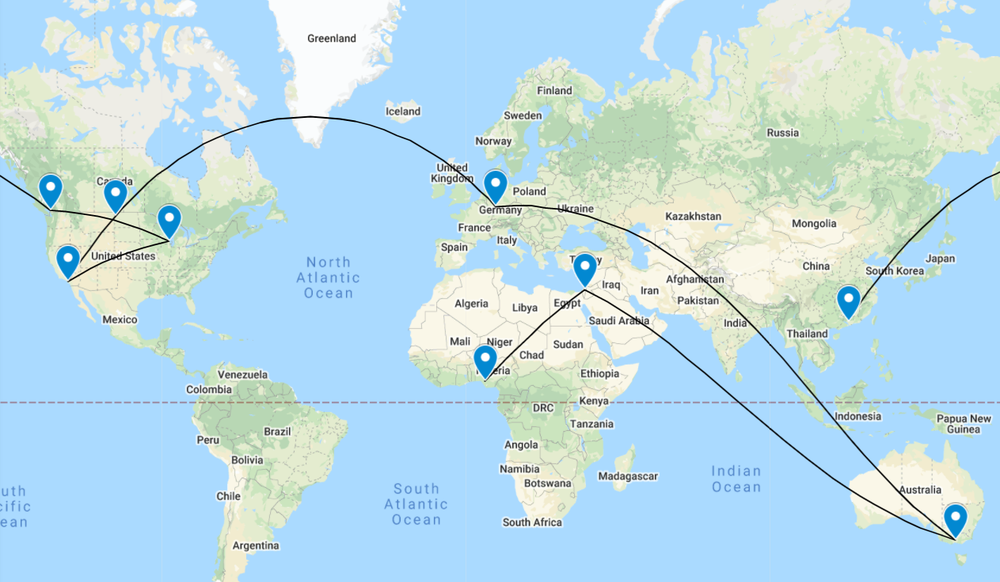

Solution: Where to Next
Answer: GALLIFREY
Written by Josh Alman, Nathan Pinsker
This puzzle presents us with a set of 9 photospheres, much like a game of GeoGuessr without the ability to move around. The most natural thing to do is determine where the photos were taken. This can be done in a variety of ways: reading or Googling text off signage and recognizing landmarks are the most common, but architecture or geography can also serve as clues. We identify the following cities; they are presented in alphabetical order, indicating to us that the city name is the important information to identify in each location.
Because the cities are alphabetized, we should reorder them in some way. The flavor text indicates that we should look at our "headings": that is, the initial direction that we face in each photosphere. It turns out that all of the locations point to other locations, with the exception of one, Benin City, where the camera faces straight up. This gives us an ordering on the cities: we start at the city not pointed to by another city (Guangzhou) and visit cities sequentially from there, ending at Benin City. Some cities may appear to be pointing at multiple others (especially if one perturbs the heading by a couple of degrees), but there is nonetheless a unique path that visits each city once.
| City | Initial facing (degrees clockwise from due north) |
|---|---|
| Guangzhou | 33.0 |
| Vancouver | 91.0 |
| Milwaukee | 258.7 |
| Fullerton | 32.6 |
| Williston | 40.6 |
| Frankfurt | 85.3 |
| Melbourne | 286.7 |
| Jerusalem | 233.6 |
| Benin City | - |

Finally, we need to extract the answer. Since we have 9 cities whose names are each 9 letters long, we diagonalize, yielding the answer GALLIFREY.
Author’s Notes
If you liked this puzzle, we recommend playing more web-based geography discovery games like GeoGuessr.
In the original version of this puzzle, we didn't give solvers the compass in the bottom corner, and solvers had to compare more carefully with maps to figure out which direction they were facing. We ended up adding it in for two reasons.
First, we discovered that many photospheres in Google Maps include a compass pointing in a wrong direction. Some of our testsolvers got confused by this, and we didn't want solvers to get stuck for too long if they just used the Google photosphere compass without checking any directions themselves.
Second, we didn't realize at the time that geodesic paths on Earth are so weird! (We still have trouble believing that the shortest path along Earth's surface from Frankfurt to Melbourne starts by going slightly North of East!) This technical detail may have made this intro round puzzle harder than we were aiming for, but we hope the compass helped.